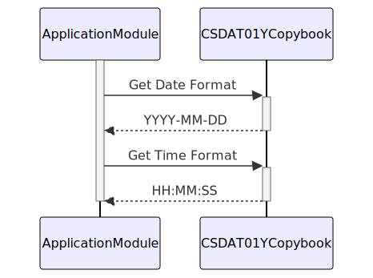

–CONTENT TO TRANSLATE–
Gerado em: 1º de outubro de 2024
Título do Documento: Aplicativo CardDemo - Especificação Padrão de Data e Hora
Descrição Resumida:
Este documento descreve o formato padronizado para manipulação de informações de data e hora no aplicativo CardDemo. Ele garante consistência e precisão na gravação, exibição e processamento de datas e horas em todas as funcionalidades do sistema.
Histórias do Usuário:
Como desenvolvedor trabalhando com dados de data e hora no aplicativo CardDemo, preciso de um formato padronizado para representar e manipular datas e horas para garantir consistência e precisão em todos os módulos.
Épico Relacionado: 9 - Utilitários do Sistema
Requisitos Técnicos:
- Armazenamento de Data e Hora: O copybook
CSDAT01Y.cpy define uma estrutura padrão (WS-DATE-TIME) para armazenar informações de data e hora.
- Inclui campos separados para ano, mês, dia, hora, minuto, segundo e milissegundos.
- Flexibilidade de Formato: O código suporta vários formatos de exibição para datas e horas:
- Datas:
YYYY-MM-DD (ex: 2024-10-26) e MM/DD/YY (ex: 10/26/24)
- Horas:
HH:MM:SS (ex: 15:30:45)
- Representação Interna: O código lida com a conversão entre esses formatos legíveis por humanos e uma representação interna consistente.
- Essa representação interna é provavelmente um formato numérico que o sistema pode usar com eficiência para cálculos e comparações.
- Regras de Negócio:
- Precisão: Todos os módulos devem aderir aos formatos definidos para garantir o registro e processamento precisos de data e hora.
- Consistência: O mesmo formato deve ser usado de forma consistente em todo o aplicativo para evitar discrepâncias e garantir a integridade dos dados.
Modelos Relacionados:
- N/A - Este código define uma estrutura de dados, não um modelo de negócios.
Configurações:
- N/A - Este código define uma estrutura de dados e não contém configurações.
Melhorias de Código:
- Tratamento de Fuso Horário: A especificação não menciona o gerenciamento de fuso horário. Adicione tratamento explícito para fusos horários, especialmente se o aplicativo lida com transações em diferentes locais geográficos.
- Horário de Verão (DST): Incorpore ajustes de DST para garantir a cronometragem precisa durante as transições do DST.
- Tratamento de Erros: Implemente verificações para valores de data/hora inválidos (por exemplo, 30 de fevereiro) e defina procedimentos adequados de tratamento de erros.
- Documentação: Adicione comentários abrangentes ao copybook explicando a finalidade de cada campo, os formatos suportados e quaisquer regras de negócios relevantes.
Melhorias de Segurança:
- N/A - Este código define uma estrutura de dados e não está diretamente relacionado à segurança.
Diagrama Conceitual:

–Made by “Smart Engineering” (by Compass.UOL)–